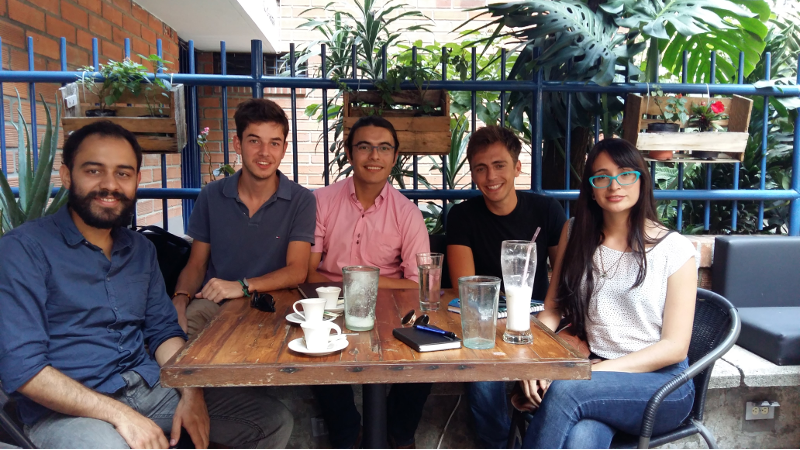
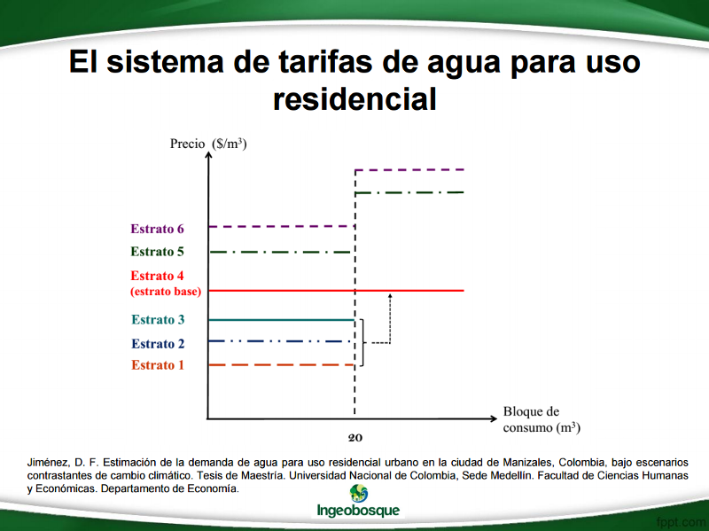
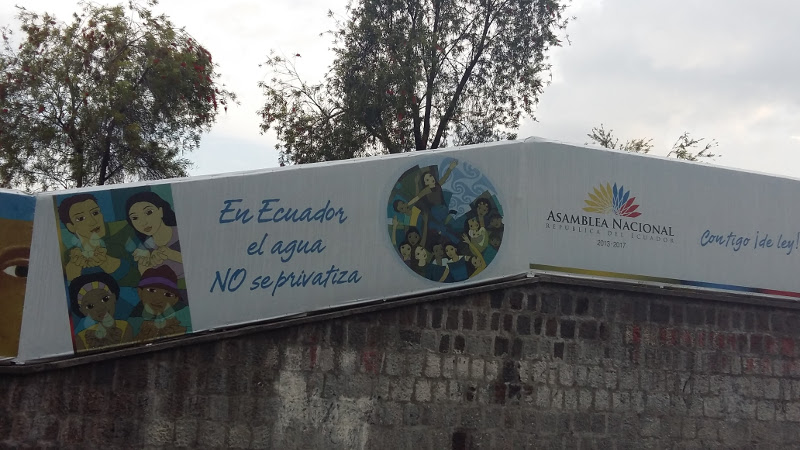
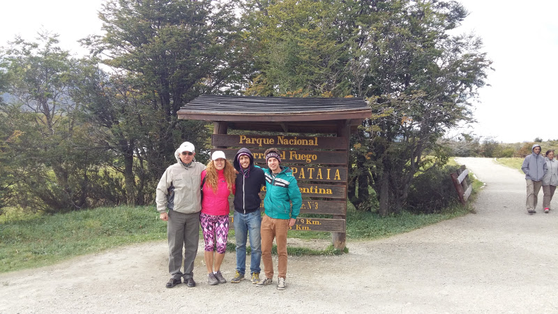

6/7 - Eau, gouvernements et entreprises
Bonjour à tous,
La gestion de l'eau douce relève-t-elle du domaine public ou du domaine privé ? Faut-il en laisser la charge au gouvernement au nom du bien être de la population, ou bien faire appel à des compagnies privées pour garantir un meilleur service ? C'est cette relation toujours complexe entre public et privé que nous aborderons aujourd'hui dans notre article d'étude. La question est particulièrement prégnante en Amérique du Sud et a fait l'objet de nombreux débats. Vous le savez, le problème politique et même philosophique de cette ressource, c’est qu’elle est quotidiennement indispensable à la vie. Poser un prix dessus cause donc un dilemme moral car si il semble malsain de poser un prix fixe sur la ressource, il reste que les coûts pour la gérer sont bien réels.
L'exemple colombien : une gestion morcelée et très disparate de la ressource
Notre étude commence en Colombie, lors de notre rencontre à Medellín avec l'équipe d'Ingeo Bosque. Souvenez vous, nous vous en parlions déjà dans notre précédent article. Ça a été l'occasion pour nous de discuter avec Felipe, spécialiste de la question, du fonctionnement du système d'administration d'eau en Colombie. Ce n’est pas si simple. Pour des raisons d’équité, la tarification de l’eau douce pour les entreprises et les particuliers doit prendre en compte plusieurs facteurs : l’efficience économique de l’usage de la ressource, le caractère durable de son usage, la finalité de la ressource bien sûr mais la tarification prend aussi en compte des critères sociaux pour offrir des tarifs plus avantageux aux milieux défavorisés… Tout en prenant garde, bien sûr, à la transparence des tarifs et à leur simplicité… Une équation bien difficile à résoudre !

Rencontre avec l'équipe d'Ingeo Bosque à Medellín
Mais les questions ne surgissent pas seulement au niveau de la tarification des consommateurs, mais aussi au niveau du type de contrat qu’il est judicieux de décerner aux entreprises privées gérant l’eau douce : la ressource ne leur appartient pas mais la distribution étant une activité onéreuse, il faut élaborer des baux les rémunérant à hauteur de leur service. Comment faire ?

Un système de tarifs adaptés aux revenus des consommateurs
La solution choisie par le gouvernement dans les années 90 est fondée sur une stratégie de décentralisation. En morcelant la question de la distribution par municipalité dans le pays, on permet l’établissement dans chaque zone d’une entité adaptée à la demande. Dans plus de la moitié des cas, des entreprises publiques sous contrat avec la municipalité sont choisies. Mais depuis quelques années, le poids des entreprise privées vient à grandir (elles sont sollicitées dans environ un cas sur dix) ainsi que le poids de leurs investissements. Les acteurs sont toujours plus nombreux et on compte aujourd’hui près de 1500 fournisseurs d’eau et d’assainissement dans le pays ! Il est donc difficile en Colombie d’établir une stratégie nationale d’amélioration des services, étant donné la fragmentation singulière du secteur !
Une politique de solidarité est cependant rendue possible par une décision de l’Etat remontant aux années 1990 : par un système de taxation, on permet aux municipalités les plus pauvres de bénéficier de subventions payées par les zones les plus riches (Medellín, Cali, Bogotá) afin de permettre un accès à la ressource pour les pauvres. Mais si ces politiques de redistribution sont possibles, il en va différemment des mesures environnementales et sanitaires qui peinent à s’établir sur l’intégralité du pays, en partie à cause de cette décentralisation. En Colombie, moins d’un tiers des eaux usées subissent un traitement après utilisation et sont simplement relâchées telles quelles dans la nature !
La privatisation en question
Chaque pays d'Amérique du Sud a sa manière de traiter la question. Mais s'il est une constante que l'on retrouve partout en parlant aux populations c'est la méfiance vis-à-vis des compagnies privées. En fait les sud américains voient l'eau un peu comme les autres ressources de leur continent et ont peur de se la faire piller. C'est malheureusement la triste histoire de l'Amérique du Sud du XXe siècle : des grandes compagnies étrangères qui s'installent dans les pays pour en exploiter les ressources (pétrole, minerais, matières premières). Le gouvernement qui n'a pas les moyens de développer une activité d'extraction par exemple, vend des droits à une compagnie américaine, et in fine, ce sont les américains qui profitent plus des richesses du sous-sol que la population.

En Equateur aussi on voit d'un mauvais œil la privatisation
La même chose est en train de se produire avec l'eau. A ce moment de l'interview Felipe nous demande d'arrêter de filmer car cela pourrait lui valoir des problèmes avec le gouvernement colombien. "Je vais finir à Guantanamo" nous lance-t-il même en rigolant. Son opinion? Le gouvernement colombien gère mal la ressource. Notamment récemment lorsqu'il a autorisé une grande compagnie canadienne à exploiter l'un des barrages colombiens pour produire de l'hydroélectricité. Comme pour les autres matières premières Felipe a la sensation que son pays se fait de nouveau flouer dans l'histoire...
Un autre exemple intéressant est celui de l'Argentine. Nous rencontrons à Ushuaïa Monica Obreque, responsable de la distribution des eaux pour la région de Patagonie. Elle nous explique qu'en Argentine le système de distribution est aujourd'hui contrôlé par l'Etat. L'entreprise dont elle est à la tête n'a vocation à faire aucun profit. Tout bénéfice est immédiatement réinvesti pour assurer la qualité du service. Mais de manière générale le service est largement déficitaire et l'Etat subventionne l'approvisionnement en eau. Tout ceci est bien évidemment lié à des questions politiques. La subvention de l'eau douce avait été l'une des raisons de la popularité et de l'élection de Cristina Kirchner à la tête du pays. Dans les années 90 il y avait eu au contraire une vague de privatisation dans le pays et on avait fait appel à une compagnie française La Lyonnaise des Eaux pour assurer le service de distribution dans la ville de Buenos Aires. Miné par des questions politiques le projet n'a jamais vraiment fonctionné et les compagnies privées sont toutes parties dans les années 2000 au moment de l'arrivée des Kirchner. La question que l'on se pose est l'Argentine peut-elle continuer encore à subventionner à perte la gestion de la ressource étant donné sa situation économique aujourd'hui ?

Rencontre avec Monica et son mari Pablo à Ushuaïa
On espère que ces quelques pistes aideront à alimenter votre réflexion. Vous l'avez compris la question est éminemment complexe et mériterait plus q'un simple article pour la traiter dans sa globalité. C'est une question qui nous concerne tous et qui prendra de plus en plus de place dans le débat public à l'avenir, alors que la population mondiale augmente et que l'accès à l'eau devient de plus en plus compliqué.
Malheureusement pas de vidéo cette fois-ci, nous nous sommes faits voler la caméra à Santiago et les reportages qui allaient avec... Pour notre dernier article nous essayerons de faire un bilan de tout ce que l'on a retenu.
Merci pour votre lecture et à très vite !